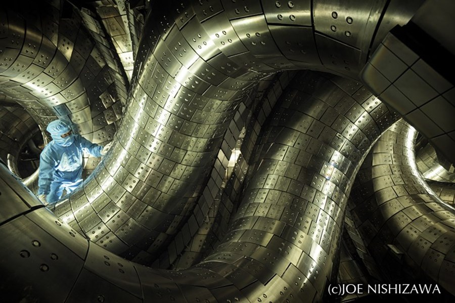
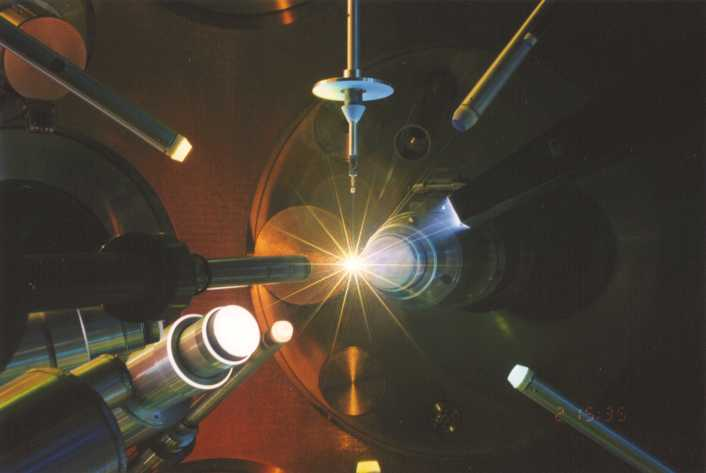

Tokamaks
Basically the vanilla flavor of fusion power.
This page's banner image is one of these. A tokamak reactor uses massive electromagnets to forcibly bend plasma
away from the toroidal walls of the reactor vessel. Despite the incredible technology at play, they're somehow actually the most
boring kind of fusion reactor. They're the most popular because they're the easiest to build and design. The problem is that,
with a donut shaped reactor, the magnets curled around it are closer together on the inside than the outside, so the plasma slowly
drifts towards the outside, making it hard to sustain a reaction for very long.
I could write a looot more about how they actually work, but I don't feel like it.

Stellarators
Yeah, they're pretty cool
Instead of using brute force and nice simple donut shapes to contain plasma, a stellarator works smarter. It's
kind of a donut shape as well, but it's some kind of twisted nightmare donut from another dimension that was literally impossible
to accurately recreate until recently, with advances in computing power and manufacturing precision. Seriously, look up some more
pictures that show the design of the exterior, it's crazy. The stellarator creates a magnetic field line that
goes through the interior of the donut, and the walls themselves are twisted around it to account for the natural flow of the plasma,
so that it doesn't drift into them. This makes it much easier to sustain plasma for long periods of time, possibly indefinitely.
The downside is that it's actually really hard to build, and the act of attempting to comprehend its true form will drive
most people insane.

Inertial Confinement Fusion
Needs more LASERS
Inertial confinement fusion works by dropping a fuel pellet into the reactor and then blasting it with a ludicrously powerful
array of lasers on every side(the Nova laser is 500 TERAwatts). The outer level of the fuel pellet immediately explodes into a cloud of plasma,
and the explosion compresses and heats the rest of the fuel. It keeps on exploding like that, until the whole pellet is
condensed into a tiny ball of superheated plasma rather like a tiny sun. Basically, instead of using magnets,
ICF uses EXPLOSIONS and lasers to keep the plasma from going anywhere. It's kind of awesome. Not very practical, though.